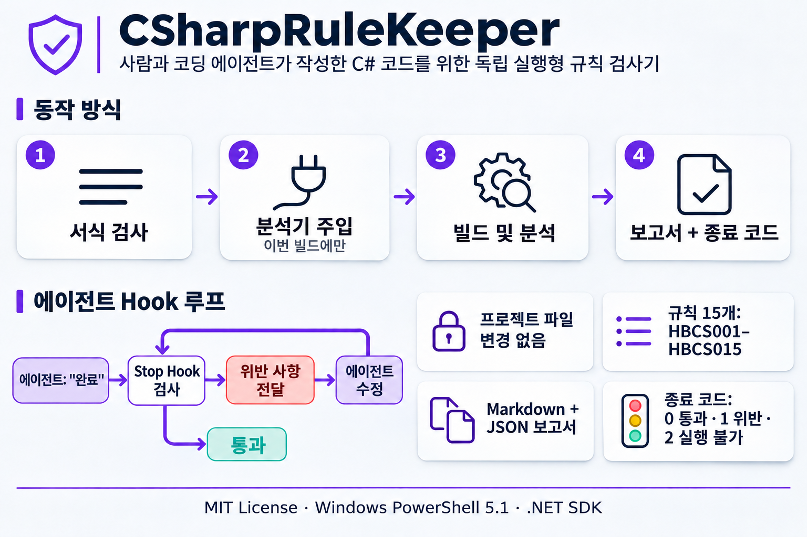

CSharpRuleKeeper 완벽 가이드
Roslyn 컴파일러 정적 분석과 무침투(Zero-Touch) MSBuild 주입으로
AI 코딩 에이전트의 C# 코드를 자율 교정하는 아키텍처와 활용법
컴파일러 개론의 어휘/구문/의미 분석(AST, 심볼 테이블), 운영체제 메모리 영역(TLS, Heap), 소프트웨어 공학의 정적 검증 이론을 실제 C# 코드와 연결해 설명합니다.
HTML의 장점을 살려 파이프라인 애니메이터, AST 트리 탐색기, Error 다운캐스팅 비교기, 라이브 린터, SHA-256 기준선 계산기, Hook 상태 머신을 직접 조작할 수 있습니다.
일반 책 기준 100페이지 이내(약 78쪽) 분량 안에 15개 규칙(`HBCS001`~`HBCS015`)과 `HBCS900`, CLI/Hook 운영, 그리고 커스텀 규칙 개발법까지 빠짐없이 담았습니다.
왜 이 책을 썼으며, 어떻게 읽어야 하는가
1. 컴퓨터공학과 3학년 학생을 위한 전공 과목 연결 지도
이 책은 최소 컴퓨터공학과 3학년 학부생이라면 누구나 막힘없이 읽고 모든 내부 원리를 꿰뚫어 볼 수 있도록 집필되었습니다. 대학 강의실에서 배운 추상적인 전공 이론들이 실제 프로덕션 정적 분석 도구인 CSharpRuleKeeper 안에서 어떻게 살아 숨 쉬는지 아래 매핑 표를 통해 먼저 확인해 보세요.
| 컴퓨터공학 전공 과목 | 강의실에서 배운 핵심 개념 | CSharpRuleKeeper에서의 실제 구현 및 적용 (수록 장) |
|---|---|---|
| 컴파일러 개론 / 프로그래밍 언어론 | 어휘 분석(Lexing), 문맥 자유 문법(CFG), 추상 구문 트리(AST), 심볼 테이블(Symbol Table), 타입 체킹 | Roslyn SyntaxToken/SyntaxTrivia(주석·공백 검사 HBCS009~010), SyntaxNode(매직 넘버·길이 검사 HBCS005~006), SemanticModel & ISymbol(타입·상속·nameof 검사 HBCS001~004, 013~014) [제3장, 제5~6장] |
| 운영체제 (OS) / 시스템 프로그래밍 | 프로세스 종료 코드(Exit Code), 표준 입출력 파이프(stdin/stdout/stderr), 스레드 지역 저장소(TLS), 힙/정적 메모리 | 3-값 종료 코드(0/1/2) 설계, Claude Code/Codex JSON 파이프 IPC 통신, 필드 저장 방식에 따른 _(Heap) / s_(Static) / t_([ThreadStatic] TLS) 접두사 강제(HBCS014) [제2장, 제5장, 제8장] |
| 자료구조 및 알고리즘 / 정보보안 | 트리 순회(DFS), 해시 테이블(ImmutableHashSet), 암호학적 해시 함수(SHA-256), 그래프 의존성 탐색 | 불변 구문 트리 순회, O(1) 속성/예외 조회, 줄 번호 변화에 강건한 SHA-256 기준선 지문(Baseline Fingerprint) 및 Git 상태 캐싱, 프로젝트 참조 DAG 연쇄 실패 방지 [제4장, 제7장, 제8장] |
| 소프트웨어 공학 (SE) | 캡슐화와 정보 은닉, 리팩터링 임계값, 회귀 테스트, 정적 품질 게이트(Quality Gate), 도그푸딩(Dogfooding) | Public 필드 금지(HBCS001), 메서드/타입/파일 2단계 길이 제한(HBCS006, 007, 015), 계약 변경 위험 경고(requiresContractReview), 자기 자신을 검사하는 run-quality-gate.ps1 [제1장, 제9~10장] |
2. 한눈에 보는 전체 아키텍처 인포그래픽
본격적인 여정을 시작하기 전에, 저장소에 공식 포함된 한국어 인포그래픽(docs/images/infographic-ko.png)을 통해 CSharpRuleKeeper의 핵심 요약도를 살펴봅시다.

이 책은 단순한 정적 문서가 아닙니다. 상단 툴바에서 [📜 연속 읽기]와 [📄 장별 넘김] 모드를 언제든 전환할 수 있으며, 각 장에 배치된 ▶ 시뮬레이터 버튼, AST 노드 클릭, 라이브 코드 수정 토글, SHA-256 지문 실험기를 직접 클릭하며 동작 원리를 체험해 보세요!
제1장. CSharpRuleKeeper란 무엇인가 — 설계 철학과 핵심 가치
HBCS001~HBCS015)으로 검사하는 무침투(Zero-Touch) 정적 분석 도구이자, AI 코딩 에이전트를 위한 자율 품질 게이트입니다.
1.1 확률적 AI 코딩 에이전트와 결정론적 규칙 수호자의 만남
오늘날 Claude Code, Codex CLI 등 대규모 언어 모델(LLM) 기반의 코딩 에이전트는 놀라운 속도로 기능을 구현합니다. 하지만 컴퓨터공학적 관점에서 LLM은 본질적으로 확률적 토큰 예측기(Probabilistic Next-Token Predictor)입니다. 아무리 프롬프트(AGENTS.md, CLAUDE.md)에 코딩 규칙을 자세히 적어 주어도, 컨텍스트 창(Context Window)이 길어지거나 복잡한 버그를 수정하다 보면 다음과 같은 스타일 드리프트(Style Drift)가 필연적으로 발생합니다.
- 기존 메서드에 코드를 계속 덧붙여 150줄이 넘는 거대한 스파게티 메서드를 만듭니다 (
HBCS006위반). - 캡슐화를 잊고
public int Count;처럼 public 필드를 노출하거나,int와Int32를 혼용합니다 (HBCS001,HBCS011위반). - 코드 줄 끝에
// 수정함같은 줄 끝 주석(Trailing Comment)을 남기거나 매직 넘버(37,0x10)를 하드코딩합니다 (HBCS009,HBCS005위반). - 정적 필드(
s_), 스레드 정적 필드(t_), 인스턴스 필드(_)의 접두사 규칙을 혼동합니다 (HBCS014위반).
1.2 서식(Formatting)과 의미 기반 린트(Semantic Linting)의 분리
많은 초보 개발자들이 "코드 포매터(Formatter)"와 "정적 분석 린터(Linter)"를 혼동합니다. CSharpRuleKeeper의 가장 중요한 아키텍처 원칙 중 하나는 자동으로 고쳐도 안전한 공백 서식과 컴파일러의 의미 정보 및 개발자(또는 에이전트)의 설계 판단이 필요한 의미 기반 린트를 철저히 분리하는 것입니다.
도구: dotnet format whitespace + .editorconfig
대상: 4칸 공백 들여쓰기, 탭 변환, 줄 끝 공백(Trailing Whitespace) 제거, 파일 끝 개행(Final Newline).
특징: 프로그램의 추상 구문 트리(AST)나 실행 의미(Semantics)를 단 1비트도 바꾸지 않습니다. 따라서 -Fix 스위치로 자동 수정해도 100% 안전합니다.
도구: CSharpRuleKeeper.Analyzers.dll (HBCS001~HBCS015)
대상: Public 필드 캡슐화, Boolean/컬렉션 명명, 매직 넘버 추출, 메서드/타입/파일 분할, 필드 접두사 등.
특징: 이름을 바꾸거나 메서드를 쪼개는 일은 외부 API, JSON 직렬화 계약, 리플렉션, 예외 순서에 영향을 줄 수 있습니다. 따라서 도구가 멋대로 코드를 뜯어고치지 않고(의미 보존이 증명된 HBCS004 nameof 제외), 정확한 진단과 Fix caution(수정 주의사항)을 보고합니다.
1.3 무침투(Zero-Touch) 원칙: 왜 대상 프로젝트를 수정하지 않는가?
일반적인 Roslyn Analyzer(예: StyleCop.Analyzers, Roslynator)를 프로젝트에 도입하려면 각 .csproj 파일이나 Directory.Build.props에 <PackageReference>를 추가해야 합니다. 하지만 이 방식에는 세 가지 실무적 문제가 있습니다.
- 저장소 오염(Repository Pollution): 팀 전체나 외부 오픈소스 프로젝트에 나만의 개인 규칙 패키지를 커밋할 수 없습니다.
- 빌드 중단 문제: 일반 Analyzer로
error심각도 규칙을 넣으면 하위 참조 프로젝트가 아예 컴파일되지 않아 전체 솔루션의 진단 목록을 한 번에 볼 수 없습니다. - 완료 증명 부재: 빌드가 조용히 건너뛰어졌을 때 "진단 0건(통과)"인지 "아예 분석기가 실행되지 않은 것"인지 구분하기 어렵습니다.
CSharpRuleKeeper는 build/Invoke-CSharpRuleKeeper.ps1 실행기를 통해 이번 빌드 단 한 번에만 MSBuild 전역 속성으로 Analyzer를 주입합니다. 검사 대상 프로젝트의 .csproj, .sln, .editorconfig를 절대 수정하지 않으며, 프로젝트에 아무것도 설치하지 않습니다.
1.4 나에게 맞는 도구인가? (Positioning Matrix)
| 비교 항목 | CSharpRuleKeeper | StyleCop / Roslynator / .NET Analyzers |
|---|---|---|
| 규칙의 성격 | 한 개발자의 관례를 담은 주관이 뚜렷한(Opinionated) 15개 핵심 규칙 (예: int 대신 Int32, 추상 클래스 ...Base, private 생략) |
수백 개의 범용 커뮤니티 표준 규칙 라이브러리 |
| 설치 및 적용 방식 | Zero-Touch 외부 실행기 (프로젝트 파일 수정 없음, 명령줄/훅에서 즉시 주입) | 프로젝트의 .csproj 또는 Directory.Build.props에 NuGet 패키지 추가 |
| AI 에이전트 연동 | 내장 Stop Hook 어댑터 제공 (Claude Code, Codex CLI 프로토콜 네이티브 지원, 상태 지문 캐싱, 3회 재시도 제한) | 별도 스크립트와 파서를 직접 구현해야 함 |
| 분석 완료 증명 | .started / .completed 마커와 SARIF 대조를 통해 미분석 프로젝트를 종료 코드 2로 엄격히 잡아냄 |
컴파일러 경고(CS9057 등)로만 출력되어 거짓 통과(False Pass) 가능성 있음 |
제2장. 10분 만에 끝내는 빠른 시작과 실습 (Getting Started)
-Doctor), 4단계 검사 파이프라인의 작동 과정, 3-값 종료 코드(0, 1, 2), 그리고 동봉된 샘플 프로젝트(SampleConsumer)를 이용한 실전 위반 수정까지 단계별로 실습합니다.
2.1 인터랙티브 4단계 동작 파이프라인 시뮬레이터
명령어를 실행하기 전에, Invoke-CSharpRuleKeeper.ps1이 내부적으로 어떤 4단계를 거쳐 프로젝트를 안전하게 검사하는지 아래 인터랙티브 시뮬레이터의 각 단계를 클릭하거나 [▶ 자동 재생] 버튼을 눌러 확인해 보세요.
Step 1: 공백 서식 검사 (dotnet format whitespace --verify-no-changes)
먼저 대상 프로젝트의 .editorconfig에 정의된 공백 규칙(들여쓰기, 탭/스페이스, 줄 끝 공백 등)을 검사합니다. 기본적으로 읽기 전용(--verify-no-changes)으로 동작하여 파일을 절대 수정하지 않으며, 차이가 발견되면 해당 파일과 줄 번호(최대 20개)를 기록합니다. (-Fix 옵션을 주었을 때만 공백을 실제로 정리합니다.)
2.2 요구 사항과 설치 (소스 체크아웃 vs 릴리스 ZIP)
CSharpRuleKeeper는 Windows와 Linux(그리고 미검증 구현된 macOS)에서 동일한 PowerShell 스크립트로 동작합니다.
| 운영체제 (OS) | PowerShell 환경 | 검증 상태 (v1.2.0 기준) | 필수 .NET SDK 요구 사항 |
|---|---|---|---|
| Windows | Windows PowerShell 5.1 (기본 내장) | 검증 완료 |
• 검사 대상 빌드용: .NET SDK 8.0.100 이상 (Roslyn 4.8+ 필요, 미만 시 CS9057 발생 및 종료 코드 2) • 소스에서 도구 빌드 시: .NET 10 SDK 10.0.400 이상 (릴리스 ZIP 사용 시에는 불필요) |
| Windows | PowerShell 7 (pwsh 7.7.0) |
검증 완료 | |
| Linux | PowerShell 7 (pwsh 7.7.0) |
WSL2 Ubuntu 24.04 검증 완료 | |
| macOS | PowerShell 7 (pwsh) |
구현됨 (미검증) |
방법 A: Git 소스 저장소 클론 (지금 바로 사용 가능)
소스 체크아웃 방식은 첫 검사 실행 시 CSharpRuleKeeper.Analyzers.csproj를 Release 구성으로 자동 빌드합니다.
# Windows:
git clone https://github.com/jacking75/CSharpRuleKeeper.git C:\tools\CSharpRuleKeeper
# Linux, macOS:
git clone https://github.com/jacking75/CSharpRuleKeeper.git ~/tools/CSharpRuleKeeper방법 B: 릴리스 ZIP 번들 다운로드
Releases 페이지에서 CSharpRuleKeeper-<version>.zip과 .sha256 해시 파일을 받아 무결성을 검증한 뒤 압축을 풉니다. ZIP 안에는 미리 빌드된 analyzers/CSharpRuleKeeper.Analyzers.dll이 들어 있으므로 .NET 10 SDK가 없어도 대상 프로젝트의 SDK(8.0.100+)만으로 즉시 실행됩니다.
(Get-FileHash .\CSharpRuleKeeper-1.2.0.zip -Algorithm SHA256).Hash.ToLowerInvariant()
Get-Content .\CSharpRuleKeeper-1.2.0.zip.sha256
Expand-Archive .\CSharpRuleKeeper-1.2.0.zip -DestinationPath C:\tools
Rename-Item C:\tools\CSharpRuleKeeper-1.2.0 CSharpRuleKeeper2.3 1단계: -Doctor로 환경 진단하기 (읽기 전용)
검사를 처음 실행하기 전이나 문제가 생겼을 때는 항상 -Doctor 스위치를 먼저 실행합니다. -Doctor는 완전한 읽기 전용으로, 패키지 복원(Restore), 빌드, 파일 수정을 일절 수행하지 않고 OS, PowerShell 버전, 설치된 SDK 목록, 대상의 global.json 요구 사항, Roslyn 4.8 컴파일러 호환성을 점검합니다.
powershell -NoProfile -ExecutionPolicy Bypass -File C:\tools\CSharpRuleKeeper\build\Invoke-CSharpRuleKeeper.ps1 -Doctor -Solution .\MySolution.sln
# 출력 예시:
CSharpRuleKeeper doctor
- Tool version: 1.2.0
- Tool root: C:\tools\CSharpRuleKeeper
- PowerShell: 5.1.26100.9711 (Desktop) C:\Windows\System32\WindowsPowerShell\v1.0\powershell.exe
- OS: Microsoft Windows 10.0.26300
- dotnet: C:\Program Files\dotnet\dotnet.exe
- Installed SDKs:
10.0.403 [C:\Program Files\dotnet\sdk]
- Target: C:\src\Shop\Shop.sln
- Target global.json: none (the latest installed SDK is used)
- Compiler compatibility: the target builds with SDK 10.0.403; the analyzer needs Roslyn 4.8 (SDK 8.0.100 or later): compatible
- Analyzer: no bundled DLL; it is built from source and needs an SDK matching 10.0.400 (rollForward=latestFeature)
- Tool build SDK: available
Doctor did not restore, build or modify any file.2.4 2단계: 검사 실행과 3-값 종료 코드(Tri-State Exit Code)
환경이 정상(exit code 0)이라면 이제 실제 검사를 실행합니다.
# Windows PowerShell 5.1 (PowerShell 7에서는 powershell 대신 pwsh 사용):
powershell -NoProfile -ExecutionPolicy Bypass -File C:\tools\CSharpRuleKeeper\build\Invoke-CSharpRuleKeeper.ps1 -Solution .\MySolution.sln -OutputPath .\report.md
# Linux 및 macOS (PowerShell 7):
pwsh -NoProfile -File ~/tools/CSharpRuleKeeper/build/Invoke-CSharpRuleKeeper.ps1 -Solution ./MySolution.sln -OutputPath ./report.md
유닉스/POSIX 및 Windows 시스템 프로그래밍에서 프로세스 종료 코드(Exit Code)는 부모 프로세스(예: CI 파이프라인, AI 에이전트 Stop Hook)에게 실행 결과를 전달하는 가장 기본적인 계약입니다. 만약 종료 코드를 0(성공)과 1(실패) 두 개로만 나누면, 부모 프로세스인 AI 에이전트는 "내가 짠 C# 코드에 규칙 위반이 있어서 실패한 것인지(에이전트가 코드를 고쳐야 함)" 아니면 "PC에 .NET SDK가 없거나 타임아웃이 나서 검사 자체가 실행되지 못한 것인지(에이전트가 코드를 아무리 고쳐도 소용없음)"를 구별할 수 없습니다!
따라서 CSharpRuleKeeper는 3-값 논리(Three-Valued Logic)에 기반해 종료 코드를 엄격히 구분합니다.
모든 대상 프로젝트/TFM에 대해 분석이 정상 완료되었고, 공백 서식 차이가 없으며, 판정에 반영되는(affectsVerdict: true) HBCS 진단이 0건입니다.
분석이 정상 완료되었으나, -FailOn(기본 warning) 이상의 새 HBCS 진단이 1건 이상 있거나 .editorconfig 공백 서식 차이가 존재합니다.
잘못된 인수, SDK 누락, 일반 컴파일 오류(CSxxxx), 분석되지 않은 프로젝트, Analyzer 로드 실패(CS9057), 시간 초과 등으로 검사를 끝내지 못한 상태입니다.
2.5 3단계: 동봉된 SampleConsumer로 실전 연습하기
저장소의 samples/SampleConsumer/RuleViolations.cs 파일에는 조건부 컴파일 기호 DEMONSTRATE_RULES가 정의되었을 때만 활성화되는 의도적인 규칙 위반 2개가 들어 있습니다.
#if DEMONSTRATE_RULES
using System;
namespace SampleConsumer;
sealed class RuleViolations
{
public Int32 Count = 0; // 위반 1: HBCS001 (error) - Public 필드 금지
public Boolean Ready { get; set; } // 위반 2: HBCS002 (warning) - Boolean 상태 접두사 누락
}
#endif
도구 폴더(C:\tools\CSharpRuleKeeper)에서 -DefineConstants DEMONSTRATE_RULES 옵션을 주어 검사기를 실행해 봅시다.
powershell -NoProfile -ExecutionPolicy Bypass -File .\build\Invoke-CSharpRuleKeeper.ps1 `
-Solution .\samples\SampleConsumer\SampleConsumer.csproj `
-DefineConstants DEMONSTRATE_RULES `
-OutputPath .\sample-practice-report.md
실행 결과는 종료 코드 1로 끝나며, 생성된 sample-practice-report.md와 sample-practice-report.json에 HBCS001과 HBCS002가 정확히 기록됩니다. 이제 public Int32 Count { get; set; }로 속성을 만들고 Ready를 IsReady로 고친 뒤 다시 실행하면 종료 코드 0으로 통과합니다!
2.6 Invoke-CSharpRuleKeeper.ps1 전체 매개변수 레퍼런스
| 매개변수 | 기본값 | 상세 설명 및 동작 계약 |
|---|---|---|
-Solution |
(필수) | 검사할 대상 경로: .sln, .slnx, .csproj 파일 또는 그중 정확히 하나가 들어 있는 폴더. |
-OutputPath |
coding-agent-change-report.md |
사람이 읽는 Markdown 보고서 출력 경로. (소스 파일이나 프로젝트 파일을 덮어쓰려는 경로는 사전 차단됨) |
-JsonOutputPath |
-OutputPath의 .json |
기계와 훅 어댑터가 읽는 JSON 결과 파일 경로 (schemaVersion: 1). |
-FailOn |
warning |
error, warning, info 중 선택. 검사를 실패(종료 코드 1)로 판정할 최소 심각도. |
-Fix |
끔 (Switch) | dotnet format whitespace를 검증만 하지 않고 실제 파일에 적용함. 공백만 수정하며 코드는 바꾸지 않음. |
-Configuration |
Debug |
대상 빌드 구성 (예: Debug, Release). |
-DefineConstants |
없음 | 이번 빌드에 주입할 컴파일 상수(예: "ALPHA;BETA"). 주의: DEBUG, TRACE 같은 프로젝트 자체 상수를 대체하며, SDK 프레임워크 상수(NET10_0 등)는 유지됨. |
-BaselinePath |
없음 | 기준선 JSON 파일 경로. 기준선에 이미 등록된 진단은 existing으로 분류되어 실패를 유발하지 않음. |
-CreateBaseline |
끔 (Switch) | 현재 분석된 진단을 -BaselinePath(필수)에 기록함. 분석이 완료되어야만 파일을 쓰며 성공 시 0 반환. |
-MaxDiagnostics |
200 |
1~10000. Markdown 보고서에 표시할 최대 진단 개수. JSON 파일에는 항상 전체 진단이 모두 수록됨. |
-TimeoutSeconds |
900 |
1~86400. 서식 검사 + Analyzer 빌드 + 프로젝트 평가 + 대상 빌드를 모두 합친 전체 시간 예산(초). |
-AnalyzerPath |
자동 탐색 | 특정 CSharpRuleKeeper.Analyzers.dll 경로를 직접 지정할 때 사용. |
-Doctor |
끔 (Switch) | 파일 수정이나 빌드 없이 실행 환경과 SDK/컴파일러 호환성만 진단. |
-ExplainEditorConfig |
끔 (Switch) | 지원하는 .editorconfig 옵션 목록을 출력하고 종료. (-OptionsDocumentationPath로 파일 저장 가능) |
제3장. 컴파일러 이론으로 본 Roslyn 정적 분석의 원리
3.1 왜 정규표현식(Regex)으로는 C# 린터를 만들 수 없는가?
학부 2~3학년 때 정적 검사 도구를 처음 만들어 보라고 하면 흔히 정규표현식(Regular Expression)으로 소스 파일을 한 줄씩 읽어서 검사하려는 유혹에 빠집니다. 하지만 촘스키 계층 구조(Chomsky Hierarchy)와 컴파일러 이론을 떠올려 보면 왜 정규표현식 기반 린터가 실패할 수밖에 없는지 명확해집니다.
C# 11의 다중 줄 원시 문자열 리터럴(""" ... """) 안에 들어 있는 빈 줄 두 개나 // 문자는 데이터(문자열 내용)이지 코드 레이아웃이나 주석이 아닙니다. 정규표현식은 현재 줄이 다중 줄 문자열 토큰 내부인지 정확히 판별하지 못해 오탐(False Positive)을 일으킵니다 (HBCS009, HBCS010).
정규 문법(Type-3 Grammar)은 유한 오토마타(DFA/NFA)와 동치이므로 임의 깊이로 중첩된 중괄호 { { ... } }의 짝을 맞출 수 없습니다. 중첩 클래스나 로컬 함수가 포함된 메서드의 정확한 시작 토큰과 끝 토큰 물리 줄 수를 세려면 반드시 문맥 자유 문법(Type-2 CFG) 파서가 필요합니다 (HBCS006, HBCS007).
var items = GetResult();라는 구문만 봐서는 items의 타입이 Boolean인지, IEnumerable<T>을 구현한 컬렉션인지, 혹은 메서드가 외부 인터페이스(IDisposable 등)의 구현체인지 절대 알 수 없습니다. 이를 알려면 심볼 테이블(Semantic Model)이 필수입니다 (HBCS002, HBCS003, HBCS004).
3.2 Roslyn 컴파일러 파이프라인과 CSharpRuleKeeper의 연결 구조
전통적인 컴파일러(예: GCC 초기 버전이나 고전 C 컴파일러)는 소스 코드를 받아 기계어(또는 IL)를 뱉어내는 거대한 블랙박스(Black Box)였습니다. 반면 Microsoft의 Roslyn(.NET Compiler Platform)은 컴파일러의 각 파이프라인 단계를 불변(Immutable) 데이터 구조와 공개 API로 개방한 화이트박스(White Box) 아키텍처입니다.
3.3 완전 충실 구문 트리(Full-Fidelity Syntax Tree)의 3요소
일반적인 컴파일러 교재에서 배우는 AST(추상 구문 트리)는 기계어 생성에 필요 없는 공백(Whitespace), 줄바꿈(EndOfLine), 주석(Comment), 전처리기 지시문(#if, #pragma)을 어휘 분석(Lexer) 단계에서 모두 버립니다.
하지만 IDE 리팩터링 도구와 린터(Linter)는 원본 소스 코드를 단 한 글자의 손실도 없이 재구성(Round-Trip)할 수 있어야 합니다. 그래서 Roslyn의 SyntaxTree는 모든 소스 텍스트를 다음 세 가지 구성 요소로 빈틈없이 표현합니다.
-
1.
SyntaxNode(비단말 노드, Non-terminal Node):
문법 규칙의 구조적 단위를 나타내는 트리 내부 노드입니다. 예를 들어ClassDeclarationSyntax,MethodDeclarationSyntax,ArgumentSyntax,LiteralExpressionSyntax등이 있습니다. -
2.
SyntaxToken(단말 기호, Terminal Symbol):
어휘 분석기가 쪼갠 최소 문법 토큰으로 구문 트리의 잎(Leaf) 노드입니다. 예:public키워드 토큰,Count식별자 토큰,37숫자 리터럴 토큰,;세미콜론 토큰. -
3.
SyntaxTrivia(부속 정보, Trivia):
컴파일러 문법의 일부는 아니지만 소스 파일에 존재하는 공백, 줄바꿈, 주석, 전처리기 지시문입니다. 모든SyntaxTrivia는 가장 가까운SyntaxToken의 앞(LeadingTrivia)이나 뒤(TrailingTrivia)에 매달려 보존됩니다!
만약 주석이 버려졌다면 줄 끝 주석을 검사할 수 없고, 단순 텍스트 검색을 썼다면 문자열 "http://example.com" 안의 //를 주석으로 착각했을 것입니다. CSharpRuleKeeper의 LayoutAnalyzer.cs는 Roslyn이 정확히 파싱한 SyntaxKind.SingleLineCommentTrivia만 순회하면서, 해당 주석이 위치한 줄(TextLine)의 앞부분(prefixSpan)에 공백이 아닌 코드가 있는지만 확인합니다!
static void AnalyzeTrailingComments(SyntaxTreeAnalysisContext context, SourceText text)
{
SyntaxNode root = context.Tree.GetRoot(context.CancellationToken);
foreach (SyntaxTrivia trivia in root.DescendantTrivia(descendIntoTrivia: true))
{
// 1. 단일 행 주석(//)이 아니거나, #endif // DEBUG 같은 전처리기 지시문 주석이면 통과!
if (!trivia.IsKind(SyntaxKind.SingleLineCommentTrivia) || IsDirectiveComment(trivia))
{
continue;
}
// 2. 주석이 시작되는 줄의 맨 앞(line.Start)부터 주석 직전(trivia.SpanStart)까지에 코드가 있는지 검사
TextLine line = text.Lines.GetLineFromPosition(trivia.SpanStart);
TextSpan prefixSpan = TextSpan.FromBounds(line.Start, trivia.SpanStart);
if (string.IsNullOrWhiteSpace(text.ToString(prefixSpan)))
{
continue; // 앞이 공백뿐이면 독립된 줄의 주석이므로 정상 통과!
}
context.ReportDiagnostic(Diagnostic.Create(
RuleDefinitions.s_trailingComment,
Location.Create(context.Tree, trivia.Span)));
}
}3.4 인터랙티브 Roslyn AST & Semantic Model 계층 탐색기
CSharpRuleKeeper의 12개 Analyzer 클래스는 각 규칙의 특성에 따라 가장 비용이 적고 정확한 Roslyn 콜백 액션을 등록합니다. 아래 인터랙티브 탐색기에서 4가지 분석 계층 탭을 클릭해 각 계층의 컴퓨터공학적 동작 원리와 실제 C# 코드를 비교해 보세요.
① RegisterSyntaxTreeAction — 파일 단위 물리 줄·토큰·Trivia 고속 스캔
컴파일러 이론 배경: 심볼 바인딩(SemanticModel)을 전혀 호출하지 않고 파서가 생성한 SyntaxTree와 SourceText만 읽습니다. 타입 추론이 필요 없으므로 시간 복잡도가 파일 크기에 비례하는 O(N)으로 가장 빠릅니다.
적용 규칙: HBCS008(불필요한 private 한정자), HBCS009(줄 끝 주석), HBCS010(연속된 빈 줄), HBCS012(줄 길이 120자), HBCS015(소스 파일 전체 길이 500/1000줄).
// ExplicitPrivateAnalyzer.cs & LayoutAnalyzer.cs
context.ConfigureGeneratedCodeAnalysis(GeneratedCodeAnalysisFlags.None); // 생성 코드(.g.cs 등) 제외
context.EnableConcurrentExecution(); // 멀티코어 병렬 실행 활성화
context.RegisterSyntaxTreeAction(AnalyzeTree); // 구문 트리 완성 즉시 실행제4장. 무침투(Zero-Touch) 빌드 주입과 완료 증명 프로토콜
.csproj를 단 한 글자도 수정하지 않으면서 어떻게 모든 하위 프로젝트에 Roslyn Analyzer를 주입할까요? 나아가 의존성 그래프의 연쇄 빌드 실패를 막는 Error Downcasting과 침묵 실패(Silent Failure)를 원천 차단하는 2단계 완료 마커 프로토콜을 파헤칩니다.
4.1 MSBuild 후킹의 비밀: CustomAfterMicrosoftCommonTargets
.NET SDK가 C# 프로젝트(.csproj)를 빌드할 때, 내부적으로 Microsoft의 표준 빌드 스크립트인 Microsoft.Common.targets를 임포트합니다. 이 표준 타겟 파일의 맨 마지막 줄 근처에는 빌드 시스템을 확장할 수 있는 공식 후크(Hook) 속성이 하나 정의되어 있습니다.
<Import Project="$(CustomAfterMicrosoftCommonTargets)"
Condition="'$(CustomAfterMicrosoftCommonTargets)' != '' and Exists('$(CustomAfterMicrosoftCommonTargets)')" />
CSharpRuleKeeper의 실행기(Invoke-CSharpRuleKeeper.ps1)는 이 메커니즘을 활용하여 다음과 같이 무침투 동적 주입(Dynamic Build-Time Injection)을 수행합니다.
- 먼저 대상 솔루션의 각 프로젝트가 이미 자체적으로
CustomAfterMicrosoftCommonTargets를 사용하고 있는지 사전 평가합니다. - 시스템 임시 폴더(
%TEMP%\CSharpRuleKeeper-<runId>\)에 임시 래퍼(Wrapper) 타겟 파일을 생성합니다. 이 래퍼는 각 프로젝트 고유의 기존 확장 타겟이 있다면 그것을 먼저 임포트해 보존하고, 곧바로build/CSharpRuleKeeper.targets를 임포트합니다. dotnet build --no-incremental을 호출할 때 명령줄 전역 속성(-p:CustomAfterMicrosoftCommonTargets=...,-p:CSharpRuleKeeperAnalyzerPath=...)으로 이 임시 타겟을 넘깁니다.- 그 결과, 대상 프로젝트의
.csproj파일은 디스크 상에서 전혀 변경되지 않지만, 메모리 상의 MSBuild 프로젝트 그래프에는<Analyzer Include="CSharpRuleKeeper.Analyzers.dll" />와 SARIF 출력 설정(<ErrorLog>...,version=2.1</ErrorLog>)이 완벽하게 결합됩니다!
4.2 RuleSeverityPolicy: 왜 Error 심각도 규칙을 빌드 중에는 Warning으로 낮추는가?
CSharpRuleKeeper에는 기본 심각도가 error인 규칙들이 있습니다: HBCS001(Public 필드 금지), HBCS014(필드 접두사), 그리고 오류 한계를 초과한 HBCS006(메서드 100줄 초과), HBCS007(타입 500줄 초과), HBCS015(파일 1000줄 초과)입니다.
여기서 매우 중요한 컴퓨터공학적 문제를 하나 생각해 봅시다. 솔루션 안에 세 개의 프로젝트가 의존성 방향 그래프(DAG)로 연결되어 있다고 가정해 보세요:
Domain.csproj ← Application.csproj ← WebApi.csproj
만약 가장 밑바닥에 있는 Domain.csproj에서 HBCS001 (error) 위반이 하나 발견되어 Roslyn 컴파일러가 진짜 컴파일 오류(DiagnosticSeverity.Error)를 발생시키면 어떤 일이 벌어질까요? 아래 인터랙티브 시뮬레이터에서 두 버튼을 눌러 직접 비교해 보세요!
CSharpRuleKeeper.targets가 CSharpRuleKeeperStandalone=true 속성과 WarningsNotAsErrors를 주입합니다. RuleSeverityPolicy.Create()는 기본 심각도가 Error인 진단을 컴파일러에게는 DiagnosticSeverity.Warning으로 낮춰서 보고하되, 진단 속성 딕셔너리에 policySeverity = "error" 꼬리표를 몰래 담아 보냅니다. 덕분에 Domain.dll이 정상 생성되어 Application과 WebApi까지 단 한 번의 빌드로 100% 분석이 완료되며, 마지막 보고서 생성기가 SARIF에서 policySeverity를 읽어 HBCS001을 다시 error로 완벽히 복원합니다!
4.3 "진단 0건 ≠ 분석 완료": 2단계 완료 증명 마커 프로토콜
정적 분석 도구에서 가장 위험한 버그는 침묵 실패(Silent Failure / False Pass)입니다. 예를 들어 대상 프로젝트의 SDK가 8.0.100보다 오래되어 컴파일러가 경고 CS9057만 내고 Analyzer 실행을 통째로 건너뛰었거나, 어떤 프로젝트가 조건부로 빌드에서 빠졌다고 해봅시다. 만약 도구가 단순히 "발견된 HBCS 진단 개수 == 0"만 보고 종료 코드 0(통과)을 반환한다면, 치명적인 규칙 위반이 그대로 통과하게 됩니다.
이를 방지하기 위해 build/CSharpRuleKeeper.targets와 실행기는 분산 시스템의 2단계 커밋(Two-Phase Commit)과 유사한 완료 증명(Completion Evidence) 프로토콜을 구현합니다.
<!-- 1단계: C# 프로젝트/TFM 빌드가 시작될 때 .started 마커 기록 -->
<Target Name="RecordCSharpRuleKeeperStart"
BeforeTargets="BeforeBuild"
Condition="'$(CSharpRuleKeeperResultsRoot)' != '' And '$(Language)' == 'C#'">
<WriteLinesToFile File="$(CSharpRuleKeeperResultBase).started"
Lines="$([MSBuild]::Escape('$(MSBuildProjectFullPath)'));$([MSBuild]::Escape('$(TargetFramework)'));$([MSBuild]::Escape('$(CSharpRuleKeeperResultFile)'))"
Overwrite="true" Encoding="utf-8" />
</Target>
<!-- 2단계: Roslyn 컴파일(CoreCompile)이 끝난 직후 .completed 마커 기록 -->
<Target Name="RecordCSharpRuleKeeperAnalysis"
AfterTargets="CoreCompile"
Condition="'$(CSharpRuleKeeperResultsRoot)' != '' And '$(Language)' == 'C#'">
<WriteLinesToFile File="$(CSharpRuleKeeperResultBase).completed"
Lines="completed" Overwrite="true" Encoding="utf-8" />
</Target>
빌드가 끝난 뒤 보고서 생성기(New-CodingAgentChangeReport.ps1)는 솔루션을 사전 평가하여 얻은 기대 컴파일 목록(Expected Compilations: 모든 C# 프로젝트 × 각 TargetFramework)과 실제 산출물을 대조합니다. 각 프로젝트/TFM 빌드가 "분석 완료(Analyzed)"로 인정받으려면 다음 4가지를 모두 만족해야 합니다:
- 해당 프로젝트/TFM의
.started마커 파일이 존재할 것. CoreCompile이 성공하여.completed마커 파일이 존재할 것.- 컴파일러가 생성한
.sarif(SARIF v2.1) 로그 파일이 존재하고 그 안에HBCS규칙 메타데이터가 등록되어 있을 것. - 컴파일 로그에 Analyzer 로드 실패(
CS9057,CS8032,CS8033,CS8034)나 Analyzer 내부 예외(AD0001)가 없을 것.
단 하나라도 누락되면 analysisCompleted: false가 되며, 진단이 0건이더라도 무조건 종료 코드 2와 함께 누락된 이유(analysisCoverage.missing)를 보고합니다.
제5장. 15대 규칙 완전 해부 Part 1 — 설계·명명·안전성 규칙
SemanticModel)과 구문 트리(SyntaxTree)를 결합해 객체지향 캡슐화, 상태 및 저장소 명명법, 리팩터링 안전성(nameof), 도메인 상수 추출을 검사하는 7개 핵심 규칙(HBCS001~005, HBCS013~014)의 원리와 경계 사례를 상세히 다룹니다.
5.1 HBCS001 — 예외가 없는 Public 필드는 허용되지 않는다 error · Design
설계 배경(Why): 객체지향 설계에서 public 필드는 내부 상태 표현을 외부 호출자에게 직접 노출합니다. 추후 유효성 검증(Validation), 변경 통지(INotifyPropertyChanged), 스레드 동기화, 지연 계산을 추가하려고 필드를 속성(Property)으로 바꾸면 바이너리 호환성(ABI, Application Binary Interface)과 리플렉션/직렬화 계약이 깨집니다.
- 검사 대상:
class,struct,record에 선언된const가 아닌 모든public필드.public readonly와public static readonly도 예외 없이 포함하며 바깥 타입의 접근성(internal class등)과 무관하게 검사합니다. - 예외 인정: 컴파일 타임 상수인
const필드,enum멤버, 그리고personal_csharp_rules.public_field_allowed_attributes옵션에 등록된 특성(Attribute)이 해당 필드 또는 그 필드를 담은 타입에 붙어 있는 경우(예: C/C++ P/Invoke 상호 운용용StructLayout). 특성 이름은 전체 이름(System.Runtime.InteropServices.StructLayoutAttribute), 짧은 이름(StructLayoutAttribute), 접미사를 뺀 이름(StructLayout) 모두 대조합니다.
public Int32 Count; // ❌ HBCS001: Public field 'Count' must be replaced or explicitly excepted
public static readonly Int32 s_maxItems = 10; // ❌ HBCS001: readonly여도 public 필드는 금지
public Int32 Count { get; set; } // ✅ OK: 속성(Property)으로 캡슐화
public const Int32 MaxLines = 5; // ✅ OK: 컴파일 상수는 허용5.2 HBCS002 — Boolean 이름은 상태를 표현해야 한다 warning · Naming
설계 배경(Why): 부울(Boolean) 식은 조건문(if (isReady))에서 참/거짓을 묻는 술어(Predicate)로 읽힙니다. 명사나 모호한 형용사(Ready, Paid, Flag) 대신 상태 동사 접두사로 시작해야 코드의 가독성이 극대화됩니다.
| 심볼 종류 | 필수 시작 접두사 (단어 경계 대조) | 비고 및 경계 사례 |
|---|---|---|
속성(Property), const 필드, public/protected 필드, record 위치 기반 매개변수 |
Is, Has, Can, Should, Needs |
public record Message(Boolean IsSent)에서 위치 기반 매개변수는 곧 자동 생성되는 public 속성의 이름이므로 PascalCase 접두사를 요구함! |
| 지역 변수, 일반 매개변수(클래스/구조체 기본 생성자 포함), private/internal 필드 | is, has, can, should, needs |
private/internal 필드는 _, s_, t_ 접두사를 먼저 떼어낸 뒤(StripFieldPrefix) 나머지 이름을 검사함 (예: _isPaid → isPaid). |
Boolean을 반환하는 메서드 |
Is, Has, Can, Should, Needs, Exists, Contains |
out 매개변수가 1개 이상 있는 Try... 메서드(예: Boolean TryParse(String s, out Int32 v))와 그 out 매개변수는 .NET 표준 관례로서 예외 인정! |
Island나 Hashtag는 HBCS002를 통과하면 안 될까?
단순히 name.StartsWith("Is")로 검사하면 섬을 뜻하는 Boolean Island가 Is로 시작한다고 잘못 통과하는 버그가 생깁니다. 그래서 BooleanNameAnalyzer.HasWordPrefix()는 접두사 바로 다음 글자가 대문자(char.IsUpper(name[prefix.Length]))이거나 문자열이 거기서 끝나는지를 확인해 정확한 단어 경계(Word Boundary)만 인정합니다. 또한 Boolean?(Nullable), 패턴 매칭 변수(if (obj is Boolean flag)), foreach 루프 변수는 오탐 방지를 위해 검사 대상에서 제외합니다.
5.3 HBCS003 — 컬렉션 이름은 복수형이어야 한다 warning · Naming
설계 배경(Why): 여러 개의 원소를 담는 컬렉션 변수가 단수형 이름(_item, orderList)을 가지면 반복문(foreach (var item in _items))을 작성할 때 단일 객체와 혼동됩니다.
- 심볼 판별 알고리즘(
AnalysisUtilities.IsCollection):SemanticModel을 통해 심볼의 타입이 배열(IArrayTypeSymbol)이거나IEnumerable/IEnumerable<T>인터페이스 자체가 또는 구현체(type.AllInterfaces)인지 확인합니다. 단,System.String은 문자의 시퀀스(IEnumerable<char>)를 구현하지만 단일 텍스트 값으로 쓰이므로 명시적으로 제외합니다! - 복수형 휴리스틱: 필드 접두사(
_,s_,t_)를 제거한 이름이 대소문자 구분 없이s로 끝나거나, 영어의 대표적 불규칙 복수형 8종(Children,Criteria,Data,Indices,Matrices,Men,People,Women)으로 끝나면 통과합니다. 따라서_items,_priceData,status는 통과하고_item,itemList,cache,lookup은 진단이 보고됩니다.
5.4 HBCS004 — 알려진 식별자에는 nameof를 사용한다 warning · Design · Code Fix 제공
설계 배경(Why): 매개변수나 속성 이름을 문자열 리터럴("userName")로 하드코딩하면, 나중에 IDE에서 식별자 이름을 리팩터링할 때 문자열만 조용히 옛날 이름으로 남아 런타임 버그를 일으킵니다. nameof(userName)를 쓰면 컴파일러가 심볼의 존재를 보장합니다.
핵심 원칙 — 무분별한 오탐 방지: 모든 문자열 리터럴을 심볼 이름과 비교하면 로그 메시지나 JSON 키까지 위반으로 잡는 재앙이 발생합니다. 따라서 NameofAnalyzer는 컴파일러의 IOperation 및 심볼 분석을 통해 의미가 100% 확실한 3가지 문맥만 정밀 타격합니다.
- 예외 생성자의
paramName인수:ArgumentException,ArgumentNullException,ArgumentOutOfRangeException,DuplicateWaitObjectException을 생성(new)할 때,IArgumentOperation.Parameter.Name == "paramName"인 인수의 문자열이 현재 감싸고 있는 메서드의 실제 매개변수 이름과 일치할 때. - 속성 변경 통지(
PropertyChangedEventArgs):new PropertyChangedEventArgs("Paid")에서 인수가propertyName이고 현재 감싼 타입(ContainingType)의 멤버 이름과 일치할 때. - 자기 타입 리플렉션 조회:
typeof(T).GetEvent,GetField,GetMember,GetMethod,GetNestedType,GetProperty("...")호출에서T가 현재 코드를 감싼 타입 자신과 같고(SymbolEqualityComparer.Default), 문자열이 그 타입의 실제 멤버 이름일 때.
5.5 HBCS005 — 매직 넘버(Magic Number)를 피한다 warning · Maintainability
설계 배경(Why): 코드 중간에 덩그러니 등장하는 return quantity * 37;이나 flags | 0x10에서 숫자의 도메인 의미는 작성자 외에는 알 수 없습니다.
- 기본 허용값과 정규화: 기본 허용값은
-1, 0, 1, 2입니다(personal_csharp_rules.allow_magic_numbers설정 시 기본 목록을 전체 대체함). 리터럴 값은 컴파일러가 파싱한 정규화된 값(literal.Token.Value)으로 비교하므로0x10은"16"으로,1_000은"1000"으로, 단항 마이너스가 붙은-5는"-5"로 정확히 비교됩니다. - 문맥 기반 스마트 예외(AST 조상 노드 분석):
const필드·지역 변수 선언,enum멤버 선언, 특성 인수([MaxLength(50)]) 내부.- 왼쪽 시프트 연산자(
<<)의 양쪽 피연산자(예: 비트 마스크1 << 4). 단,>>,|,&는 예외가 아닙니다. - 선언한 식별자 이름이 이미 뜻을 설명하는 초기화 식(
IsNamedDeclarationValue): 지역 변수·필드·속성의 초기화 식 전체가 단일 리터럴이거나(Int32 maxRetries = 3;), 초기화 식 전체인 단일 메서드 호출/생성자의 직접 인수일 때(TimeSpan timeout = TimeSpan.FromSeconds(30);). 반면Int32 total = count * 37;처럼 수식의 일부이거나 매개변수 기본값,case 42:레이블에 쓰인 숫자는 이름이 없으므로 계속 보고됩니다! - 테스트 프로젝트 자동 제외:
analyze_test_projects = false(기본값)이면 테스트 코드는 매직 넘버 검사를 건너뜁니다. MSBuildIsTestProject=true속성이 있거나, 어셈블리 이름의 마지막 점(.) 구분 구간이Test,Tests,UnitTest,UnitTests,IntegrationTest,IntegrationTests,Specs,Benchmark,Benchmarks이거나 점 없이Tests(대소문자 구분)로 끝나는 경우만 테스트 프로젝트로 인정합니다. 덕분에CalculatorTests는 테스트로 인식하고HardwareSpecs나Contests는 일반 프로젝트로 정확히 구분합니다!
5.6 HBCS013 — 필수 타입·메서드 명명 패턴 warning · Naming
설계 배경(Why): 선언부를 열어 보지 않고도 식별자 이름만으로 인터페이스, 특성, 추상 기반 클래스, 비동기 메서드를 즉시 구별할 수 있어야 합니다.
- 인터페이스:
I다음에 대문자로 시작해야 합니다 (예:IDrawable✅ /Drawable❌). - 특성(Attribute) 클래스:
System.Attribute를 직·간접 상속한 타입은Attribute로 끝나야 합니다. - 추상 기반 타입:
System.Attribute를 상속하지 않는 모든abstract class와abstract record는Base로 끝나야 합니다 (예:ShapeBase✅ /Shape❌). (static class는 컴파일러 내부적으로 abstract+sealed이지만 제외됨) - 비동기 메서드:
async키워드 유무와 관계없이System.Threading.Tasks의Task,Task<T>,ValueTask,ValueTask<T>를 반환하는 일반 메서드는Async로 끝나야 합니다. (진입점Main, override, 인터페이스 구현, 로컬 함수, 람다,IAsyncEnumerable<T>반환 메서드는 제외)
5.7 HBCS014 — 필드 접두사는 저장 방식(메모리 수명)과 일치해야 한다 error · Naming
설계 배경(Why): 컴퓨터공학 <운영체제>와 <프로그래밍 언어론> 관점에서, 같은 클래스 안에 선언된 필드라 할지라도 인스턴스 필드, 정적(Static) 필드, 스레드 정적(Thread-Static) 필드는 할당되는 메모리 영역과 수명(Lifetime), 그리고 멀티스레드 동시성(Concurrency) 위험도가 완전히 다릅니다! 코드 본문에서 count++라고만 적혀 있으면 이것이 객체 내부 상태인지 모든 스레드가 공유하는 전역 상태인지 알 수 없어 레이스 컨디션(Race Condition) 버그가 발생합니다.
.editorconfig만으로는 부족하고 Roslyn Analyzer(FieldPrefixAnalyzer)가 필요한가? .editorconfig는 [ThreadStatic] 특성을 식별하지 못하지만, HBCS014는 field.GetAttributes()로 System.ThreadStaticAttribute를 확인하여 s_가 아닌 t_를 강제합니다.
제6장. 15대 규칙 완전 해부 Part 2 — 길이·레이아웃·스타일 및 라이브 린터
HBCS006, 007, 015), 깔끔한 레이아웃과 명시적 타입을 유지하는 스타일 규칙(HBCS008~012), 설정 검증 진단(HBCS900)을 살펴보고, 브라우저 내장 라이브 C# 린터 플레이그라운드에서 직접 위반을 검출하고 교정해 봅니다.
6.1 2단계 물리 줄 수(Physical Lines) 규칙 3총사: HBCS006, HBCS007, HBCS015
AI 코딩 에이전트가 기능을 추가할 때 가장 흔히 저지르는 실수는 기존 메서드와 클래스에 계속 코드를 이어 붙여 수백~수천 줄짜리 거대 객체(God Object)를 만드는 것입니다. CSharpRuleKeeper는 리팩터링 후보를 알리는 경고 한계(Warning Limit)와 절대 넘어서는 안 되는 최대 한계(Error Limit)의 2단계(Two-Tier) 임계값을 적용합니다. 오류 한계를 넘으면 error 진단 하나만 보고합니다.
| 규칙 ID | 검사 대상 | 기본 Warning / Error 한계 | 측정 범위 알고리즘 및 예외 |
|---|---|---|---|
HBCS006 |
메서드, 생성자, 종료자, 연산자, 변환 연산자, 각 접근자(get/set/init/add/remove), 로컬 함수 |
30줄 초과 warning 100줄 초과 error ( method_lines_*) |
선언의 첫 토큰(Attribute [Fact] 등 포함)부터 마지막 토큰(} 또는 ;)까지의 물리 줄 수. 선언 위의 주석은 제외되며 내부 주석·빈 줄·중첩 로컬 함수는 포함됨. (람다와 식 본문 속성은 감싼 멤버에 포함) |
HBCS007 |
class, struct, interface, record, record struct 선언 |
300줄 초과 warning 500줄 초과 error ( type_lines_*) |
partial 선언은 각 파일의 선언별로 따로 계산함. 중첩 타입은 바깥 타입 줄 수에 포함되면서 자신도 검사됨. (enum, delegate 제외. EF Core Migration 상속 타입 및 type_length_excluded_suffixes 접미사 타입 예외) |
HBCS015 |
.cs 소스 파일 전체 |
500줄 초과 warning 1000줄 초과 error ( file_lines_*) |
유닉스 wc -l과 동일하게 파일 전체 물리 줄을 계산(CountFileLines). 파일 맨 끝 개행(\n) 뒤의 빈 위치(IsAfterFinalLineBreak)는 줄로 세지 않으며 빈 파일은 0줄. 진단은 1번 줄에 표시됨. |
6.2 스타일 및 레이아웃 규칙 (HBCS008 ~ HBCS012)
HBCS008 · 불필요한 private 생략 info
class, struct, record, record struct 직속 멤버의 기본 접근성은 이미 private이므로 생략하여 선언을 간결하게 만들고 기본이 아닌 접근성(public, internal)이 눈에 띄게 합니다.
안전 예외(제거 시 의미 변경/컴파일 오류 방지): private protected, 확장 partial 메서드·속성(예: [GeneratedRegex], [LoggerMessage]), 인터페이스 멤버, C# 14 extension 블록 멤버, private set 접근자는 건드리지 않습니다.
HBCS009 · 코드 줄 끝 주석 금지 warning
같은 줄 앞에 코드가 있는 // 주석(Trailing Comment)을 금지하고 코드 위의 독립된 줄로 옮기게 합니다.
허용 예외: 별도 줄의 // 주석, XML 문서 주석(///), 블록 주석(/* */), 그리고 전처리기 지시문 뒤의 주석(#endif // DEBUG, #pragma warning disable HBCS005 // 사유, #nullable enable // 사유)은 허용합니다.
HBCS010 · 연속된 빈 줄 금지 warning
논리 블록 구분에는 빈 줄 하나면 충분합니다. 연속된 빈 줄 중 첫 줄은 허용하고 두 번째 줄부터 보고합니다.
AST 토큰 보호: 다중 줄 문자열 리터럴(Verbatim @"...", Raw """...""", 보간 문자열) 토큰의 스팬(TextSpan) 내부에 있는 빈 줄은 코드 레이아웃이 아니라 문자열 데이터이므로 완벽히 무시합니다.
HBCS011 & HBCS012 · 정수 타입 & 줄 길이 warning
• HBCS011: 타입을 가리키는 모든 곳(선언, 캐스트, 제네릭 인수, typeof, sizeof)에서 int, long, uint, ulong 키워드 대신 비트 폭을 명시한 Int32, Int64, UInt32, UInt64를 요구합니다.
• HBCS012: 줄바꿈을 제외한 각 물리 줄이 max_line_length(기본 120자)를 넘으면 초과한 구간(excessSpan)에 경고를 표시합니다.
6.3 HBCS900 — 설정 진단: 잘못된 .editorconfig 옵션 값과 폴백(Fallback)
HBCS900은 C# 코딩 규칙이 아니라 .editorconfig의 personal_csharp_rules.* 설정 오류를 알려주는 메타 진단입니다(그래서 번호가 900번대입니다).
- 검출 조건: 길이 한계 쌍(
method_lines_*,type_lines_*,file_lines_*)이 양의 정수가 아니거나0 < warning < error대소 관계가 깨졌을 때(예:method_lines_warning = 150인데 기본error = 100인 경우),max_line_length가 양의 정수가 아닐 때,analyze_test_projects가true/false가 아닐 때 보고합니다. - 안전한 2단계 폴백: 파싱할 수 없는 값은 먼저 그 항목의 기본값으로 대체하고, 그래도 쌍이
0 < warning < error를 만족하지 않으면 두 값 모두 기본값으로 되돌립니다. - 판정 비영향 계약: 컴파일이 끝날 때(
CompilationEnd) 해당 옵션이 적용되는 첫 번째 소스 파일의 1번 줄에 보고되지만, 고쳐야 할 곳은 그.cs파일이 아니라.editorconfig입니다. 어떤-FailOn에서도affectsVerdict: false이므로 검사를 실패시키지 않으며, Stop Hook에서는 에이전트를 차단하지 않고 사람에게 알림(systemMessage)으로 보여줍니다.
6.4 인터랙티브 라이브 C# 규칙 린터 & 교정 실험실
아래 실험실에서 5가지 실전 코드 시나리오를 선택하고 [✨ 규칙에 맞게 안전한 수정 적용 (Before / After)] 버튼을 클릭해 보세요. 각 줄에서 어떤 HBCS 진단이 발생하는지, SARIF 보고서와 종료 코드가 어떻게 바뀌는지 실시간 애니메이션으로 확인할 수 있습니다.
제7장. .editorconfig 맞춤 설정과 레거시 프로젝트 기준선(Baseline) 전략
.editorconfig 하나만 읽습니다. 11개의 세부 옵션과 프리셋, 다른 Analyzer와의 충돌 해결법, 그리고 수만 줄의 레거시 코드베이스에 오늘 당장 도구를 도입할 수 있게 해주는 SHA-256 기준선(Baseline) 시스템을 살펴봅니다.
7.1 personal_csharp_rules.* 11개 옵션 완벽 가이드
대상 프로젝트의 .editorconfig 파일 내 [*.cs](또는 [*.{cs,csx}]) 섹션 아래에 다음 옵션을 지정합니다. 검사를 실행하지 않고 도구에서 직접 옵션 설명을 보려면 -ExplainEditorConfig 스위치를 사용할 수 있습니다.
.editorconfig 옵션 키 (접두사 personal_csharp_rules.) |
기본값 | 적용 규칙 | 동작 및 주의사항 |
|---|---|---|---|
method_lines_warning / method_lines_error |
30 / 100 |
HBCS006 |
양의 정수 쌍이며 반드시 0 < warning < error여야 함 (위반 시 HBCS900 발생 후 기본값 폴백). |
type_lines_warning / type_lines_error |
300 / 500 |
HBCS007 |
타입 선언 물리 줄 수 경고 및 오류 한계 쌍. |
file_lines_warning / file_lines_error |
500 / 1000 |
HBCS015 |
소스 파일 전체 물리 줄 수 경고 및 오류 한계 쌍. |
max_line_length |
120 |
HBCS012 |
줄당 최대 문자 수 (표준 에디터의 max_line_length와 구별되도록 접두사가 붙음). |
allow_magic_numbers |
-1,0,1,2 |
HBCS005 |
쉼표로 구분된 허용 숫자 목록. 주의: 설정 시 기본 목록 전체를 대체하므로 기본값도 계속 쓰려면 함께 적어야 함(예: -1,0,1,2,100,404). |
analyze_test_projects |
false |
HBCS005 |
true로 설정하면 테스트 프로젝트에서도 매직 넘버를 검사함. |
public_field_allowed_attributes |
(비어 있음) | HBCS001 |
Public 필드를 허용할 특성 이름 목록 (예: StructLayout,DataMember). |
type_length_excluded_suffixes |
(비어 있음) | HBCS007 |
타입 길이 검사를 건너뛸 타입 이름 접미사 목록 (예: Dto,Migration, 대소문자 구분). |
= error를 명시하지 마세요!
config/presets/personal.editorconfig와 team-starter.editorconfig를 열어 보면, 기본 심각도가 error인 규칙(HBCS001, HBCS014, 그리고 HBCS006·007·015의 오류 단계)에는 dotnet_diagnostic.HBCS001.severity = error가 적혀 있지 않습니다. 아무것도 적지 않아도 이미 기본값이 error이기 때문입니다. 만약 .editorconfig에 명시적으로 = error를 적어 버리면, 제4장에서 배운 RuleSeverityPolicy가 "사용자가 컴파일 중단을 직접 강제한 설정"으로 존중하여 Warning 다운캐스팅을 수행하지 않습니다. 그 결과 위반이 발생한 프로젝트의 컴파일이 멈추고 이를 참조하는 하위 프로젝트가 Not analyzed(종료 코드 2)가 됩니다!
7.2 다른 Analyzer(StyleCop, IDE, CA)와 함께 쓰기
CSharpRuleKeeper의 일부 규칙은 일반적인 .NET 커뮤니티 관례와 정반대 방향의 주관을 담고 있습니다. 기존 프로젝트에서 다른 Analyzer와 함께 사용할 때는 아래 매트릭스에 따라 어느 한쪽을 선택해 정렬해야 합니다.
| HBCS 규칙 | 충돌하거나 겹치는 타 규칙 | HBCS 규칙 기준으로 정렬하는 .editorconfig 설정법 |
|---|---|---|
HBCS011 (int 대신 Int32) |
IDE0049, StyleCop SA1121 (키워드 선호) |
dotnet_style_predefined_type_for_locals_parameters_members = falsedotnet_style_predefined_type_for_member_access = false 및 SA1121 = none |
HBCS008 (private 생략) |
IDE0040, StyleCop SA1400 (접근 제한자 명시 요구) |
dotnet_style_require_accessibility_modifiers = omit_if_default:suggestion 및 SA1400 = none |
HBCS014 (_, s_, t_ 접두사) |
StyleCop SA1309, SA1311, IDE1006 |
SA1309와 SA1311을 none으로 끄고 dotnet_naming_rule을 맞춤 |
HBCS001, 010, 013 |
CA1051/SA1401, SA1507, CA1715/VSTHRD200 |
기능이 중복되므로 한쪽을 none으로 설정 가능 |
7.3 기준선(Baseline) 아키텍처와 SHA-256 지문 알고리즘
이미 수백 개의 기존 위반이 있는 레거시 솔루션에 CSharpRuleKeeper나 Stop Hook을 도입할 때, 기존 코드를 한꺼번에 다 고칠 수는 없습니다. 이때 기준선(Baseline) 기능을 사용하면 "오늘 시점의 기존 위반(existing)은 기록해 두고, 앞으로 새로 추가되는 위반(new)에만 검사를 실패(종료 코드 1)"시킬 수 있습니다.
# 1. 현재 진단을 기준선 파일(schemaVersion: 2)로 저장하고 Git에 커밋 (성공 시 종료 코드 0)
powershell -NoProfile -ExecutionPolicy Bypass -File C:\tools\CSharpRuleKeeper\build\Invoke-CSharpRuleKeeper.ps1 `
-Solution .\MySolution.sln -BaselinePath .\csharprulekeeper-baseline.json -CreateBaseline
# 2. 이후 검사(또는 Stop Hook)에서는 기준선에 없는 새 진단(isNew: true)만 실패를 유발함
powershell -NoProfile -ExecutionPolicy Bypass -File C:\tools\CSharpRuleKeeper\build\Invoke-CSharpRuleKeeper.ps1 `
-Solution .\MySolution.sln -BaselinePath .\csharprulekeeper-baseline.json
만약 진단 지문을 SHA256(RuleId + Path + Line + Message)로 설계했다면, 파일 맨 위에 using System.Linq; 한 줄만 추가해도 파일 아래쪽 모든 기존 진단의 줄 번호가 +1씩 밀려서 수십 개의 기존 진단이 전부 새 진단(new)으로 폭발해 버립니다! 이를 막기 위해 CSharpRuleKeeper는 줄 번호를 제외하고 경로 구분자를 모두 \로 정규화한 SHA-256(RuleId + NormalizedPath + Message)와 해당 지문의 등장 횟수(count)를 저장합니다. 덕분에 파일 안에서 코드가 위아래로 이동하거나 Windows에서 만든 기준선을 Linux(/)에서 실행해도 100% 정확히 매칭됩니다!
기준선에 HBCS006 | App\OrderService.cs | "Method 'Process' has 45 physical lines and exceeds the warning limit of 30" (count: 1)이 저장되어 있다고 가정합시다. 아래 4가지 코드 변경 상황을 클릭해 지문 해시 일치 여부와 판정 결과를 확인해 보세요!
진단 위치가 15번 줄에서 35번 줄로 바뀌었지만, 지문 입력 문자열에는 줄 번호가 포함되지 않으므로 기준선 지문 해시와 100% 동일합니다. 저장된 count: 1 범위 안이므로 existing으로 판정되어 에이전트를 차단하지 않습니다.
Fingerprint: e4a92c1f88b3d071... == Baseline Fingerprint (MATCHED!)
제8장. AI 코딩 에이전트 Stop Hook 아키텍처와 자율 교정 루프
{"decision":"block"}과 구체적인 수정 지침을 되돌려 보내 스스로 고치게 만드는 build/Invoke-CSharpRuleKeeperHook.ps1의 상태 머신을 해부합니다.
8.1 Stop Hook 상태 머신(Finite State Machine) 다이어그램
훅 어댑터는 에이전트를 무한 루프에 빠뜨리지 않으면서도 빠른 응답 속도(변경 없을 시 약 1초)와 엄격한 검증을 동시에 달성해야 합니다. 아래 SVG 상태 다이어그램은 Invoke-CSharpRuleKeeperHook.ps1의 전체 의사결정 흐름을 보여줍니다.
8.2 Claude Code 및 Codex CLI 설정 방법
저장소의 hooks/claude-code/와 hooks/codex/ 폴더에는 바로 복사해 쓸 수 있는 설정 예제가 준비되어 있습니다.
{
"hooks": {
"Stop": [
{
"hooks": [
{
"type": "command",
"command": "powershell.exe",
"args": [
"-NoProfile",
"-ExecutionPolicy", "Bypass",
"-File",
"C:\\tools\\CSharpRuleKeeper\\build\\Invoke-CSharpRuleKeeperHook.ps1"
],
"timeout": 900
}
]
}
]
}
}작업을 마치면 Stop 훅이 솔루션 전체에 CSharpRuleKeeper를 실행한다. HBCS 진단, 컴파일 오류, 공백 서식 차이가 보고되면 보고서 경로를 열어 각 위치를 고친 뒤 다시 마무리한다.
규칙을 통과시키려는 목적만으로 public API, 직렬화 형식, 프로토콜 문자열, 예외 동작을 바꾸지 않으며, 규칙을 통과시키려고 억제를 추가하거나 .editorconfig를 고치지 않는다.
안전하게 고칠 수 없는 진단이 있거나 같은 진단이 세 번 시도 후에도 남으면 멈추고 사용자에게 설명한다.8.3 핵심 엔지니어링 메커니즘 3가지
-
1. 1초 만에 끝나는 Git 작업 트리 상태 지문(State Fingerprint) 캐싱:
Claude Code는 코드 수정 없이 단순 질문에 답변할 때도 매번 Stop 훅을 호출합니다. 매번 빌드를 돌리면 15~20초씩 낭비되므로,-ChangeDetection auto(기본값)일 때 훅은 Git 저장소의HEAD커밋 해시 + 변경되거나 추적되지 않는 모든.cs, .csproj, .props, .targets, .editorconfig, .globalconfig파일의 내용 + 대상 경로 +-FailOn+ 기준선 내용 + 도구 버전으로 SHA-256 지문을 계산합니다. 한 번 통과하면 상태 폴더(Windows:%LOCALAPPDATA%\CSharpRuleKeeper\hook-state\passed-<16hex>.json)에 기록하여, 파일이 바뀌지 않은 다음 Stop에서는 약 1초 안에 빌드를 건너뛰고 즉시 허용합니다! -
2. 에이전트가 고칠 수 있는 문제(Block) vs 고칠 수 없는 문제(Notify)의 분리:
훅은 ① 판정에 반영되는 HBCS 진단, ② 공백 서식 차이, ③ 위치가.cs파일인CSxxxx컴파일 오류에 대해서만 에이전트를 차단(decision: "block")합니다. 반면 SDK 미설치, 타임아웃, 기준선 파일 누락, 다른 Analyzer(CA, StyleCop 등)의 오류는 에이전트가 C# 코드를 고쳐서 해결할 수 없으므로 절대 차단하지 않고{"systemMessage":"..."}로 사람에게만 알립니다. -
3. 세션별 재시도 회로 차단기(Circuit Breaker,
-MaxRetries 3):
세션 ID별로<session_id>.json에 연속 차단 횟수를 기록합니다.stop_hook_active: true상태에서 3번 연속 차단된 후에도 문제가 남으면, 4번째 Stop에서는 재시도 카운터를 초기화하고retry limit (3) reached알림과 함께 에이전트를 놓아주어 무한 토큰 소모를 방지합니다. (14일이 지난 상태 파일은 자동 정리됩니다.)
제9장. 보고서 스키마(Markdown & JSON) 해부와 트러블슈팅 가이드
affectsVerdict)을 이해하고, 실무에서 겪을 수 있는 모든 오류 증상을 의사결정 트리로 즉시 해결합니다.
9.1 판정 논리식: 어떤 진단이 검사를 실패(Exit Code 1)시키는가?
발견된 모든 HBCS 진단이 검사를 실패시키는 것은 아닙니다. 각 진단 항목의 affectsVerdict(판정 반영 여부) 부울 값은 다음 논리식의 결과가 true일 때만 참이 됩니다.
affectsVerdict = (ruleId != "HBCS900")
&& (isNew == true) // 기준선을 쓰지 않거나, 기준선에 없는 새 진단일 것
&& (severity >= failOnThreshold); // 심각도가 -FailOn (기본 warning) 이상일 것
따라서 기본 설정(-FailOn warning)에서 HBCS008(기본 심각도 info)이나 기준선에 이미 등록된 진단(isNew: false), 혹은 .editorconfig 설정 오류인 HBCS900은 보고서 목록에는 투명하게 출력되지만 Verdict: does not affect the verdict로 표시되며 종료 코드를 1로 만들지 않습니다.
9.2 JSON 결과 스키마(schemaVersion: 1) 핵심 필드 명세
JSON 보고서는 어떤 OS와 PowerShell 버전에서든 BOM 없는 UTF-8로 원자적(임시 파일 기록 후 이동)으로 생성됩니다.
| JSON 최상위 필드 | 타입 및 값 | 엔지니어링 의미 및 확인 포인트 |
|---|---|---|
status / exitCode |
"passed" | "failed" / 0 | 1 | 2 |
exitCode == 0일 때만 status가 "passed"가 됨. |
analysisCompleted |
Boolean |
가장 중요한 필드! true가 아니면 진단이 0개여도 분석이 끝난 것이 아님. |
analysisCoverage |
{ compilations, analyzed, missing } |
솔루션에서 기대한 총 프로젝트/TFM 컴파일 수와 실제 분석된 수, 그리고 누락된 프로젝트별 사유. |
formatStatus / formatFailureKind |
"passed" | "failed" / "none" | "differences" | "toolError" | "timeout" |
differences는 공백 서식 위반(종료 코드 1), toolError나 timeout은 실행 오류(종료 코드 2). |
timings |
Object (ms) |
analyzerPreparationMilliseconds, formatMilliseconds, buildAndAnalysisMilliseconds, reportPreparationMilliseconds 단계별 소요 시간. |
diagnostics[].requiresContractReview |
Boolean |
수정이 public API, 직렬화 이름, 상호 운용 레이아웃을 바꿀 위험이 있는 규칙(HBCS001, 002, 003, 004, 013, 014)이면 true. |
9.3 실전 트러블슈팅 빠른 해결 매트릭스
| 증상 및 메시지 | 원인 분석 | 즉각 해결책 |
|---|---|---|
Not analyzed: ... CS9057 및 종료 코드 2 |
대상 프로젝트가 빌드되는 .NET SDK가 8.0.100보다 오래되어 Roslyn 4.8 Analyzer를 로드하지 못함 | -Doctor를 실행해 확인하고 대상에 .NET SDK 8.0.100 이상을 설치하거나 global.json을 업데이트한다. |
Not analyzed: ... it was not compiled; most likely a project it references failed |
참조하는 하위 프로젝트에 CSxxxx 컴파일 오류가 있거나, .editorconfig에서 HBCS 규칙에 = error를 명시함 |
하위 프로젝트의 컴파일 오류를 먼저 고치거나, .editorconfig에서 명시적 = error 줄을 제거한다. |
| HBCS 진단이 0개인데 종료 코드 1로 실패함 | 공백 서식이 .editorconfig와 다름 (formatFailureKind: differences) |
보고서의 Whitespace formatting differences 절을 확인하고 -Fix 옵션을 주거나 dotnet format whitespace를 실행한다. |
analysisCompleted: true이고 HBCS 진단이 0개인데 종료 코드 2 |
다른 Analyzer(CA, IDE, StyleCop 등)의 오류가 빌드를 실패시킴 (buildErrors에 기록됨) |
보고서의 Execution errors 및 JSON의 buildErrors에서 타 Analyzer 오류를 확인해 수정한다. |
HBCS900이 .cs 파일의 1번 줄을 가리킴 |
해당 .cs 파일에 적용되는 .editorconfig의 personal_csharp_rules.* 옵션 값이 잘못됨 |
.cs 파일이 아니라 .editorconfig의 잘못된 옵션 값을 수정한다. |
| Windows PowerShell 5.1에서 JSON/보고서의 한글이 깨져 보임 | 파일은 BOM 없는 UTF-8인데 PS 5.1의 Get-Content 기본 인코딩이 ANSI(CP949)임 |
Get-Content .\report.json -Encoding UTF8로 읽거나 PowerShell 7 / VS Code로 연다. |
제10장. 도구 확장하기 — 나만의 새로운 Roslyn 규칙과 Code Fix 만들기
HBCS016)을 추가하는 7단계 절차와 불변 구문 트리를 변환하는 CodeFixProvider의 구현 원리, 그리고 도구가 자기 자신을 검사하는 품질 게이트(run-quality-gate.ps1)를 살펴봅니다.
10.1 새로운 규칙(HBCS016) 추가 7단계 워크플로
RuleIds.cs에 상수 추가:public const string MyNewRule = "HBCS016";(900번대는 설정 진단용이므로 코딩 규칙은 016부터 순차 부여).RuleDefinitions.cs에DiagnosticDescriptor정의: 필드는 반드시internal static readonly DiagnosticDescriptor s_myNewRule형태(s_camelCase)로 선언합니다. 메시지 포맷에는 해결에 필요한 실제 값과 제한값/식별자를 포함하고, 새 규칙의 기본 심각도는DiagnosticSeverity.Warning으로 시작합니다.- Analyzer 클래스 구현: 적절한 도메인 폴더(
Naming,Maintainability,Safety,Style)에 클래스를 만들고Initialize에서 반드시context.ConfigureGeneratedCodeAnalysis(GeneratedCodeAnalysisFlags.None);과context.EnableConcurrentExecution();을 호출합니다. - 옵션 추가 (필요 시):
RuleOptions.cs와AnalyzerOptionsReader.cs에 옵션 리더를,OptionValidator.cs에 유효성 검증(HBCS900연동)을 추가합니다. - 단위 테스트 작성 (
tests/CSharpRuleKeeper.Analyzers.Tests/):AnalyzerTestHarness를 사용해 ① 통과 사례, ② 위반 사례, ③ 예외 사례, ④ 경계 사례를 모두 테스트합니다. - 릴리스 추적 및 문서 갱신:
AnalyzerReleases.Unshipped.md에 규칙을 등록하고, 영문/국문 문서(README.md,README_kr.md,docs/RULES.md,docs/ko/RULES.md등)와New-CodingAgentChangeReport.ps1의 수정 주의사항(Fix caution)을 함께 갱신합니다. - 품질 게이트(
.\build\run-quality-gate.ps1) 실행: 이 저장소 자체가 새 규칙을 포함한 모든 규칙(-FailOn info)을 진단 0건으로 통과하는지 검증합니다!
10.2 NameofCodeFixProvider로 배우는 불변 AST 변환 원리
Roslyn의 구문 트리(SyntaxNode)는 함수형 프로그래밍의 영속 데이터 구조(Persistent Immutable Tree)처럼 완전한 불변(Immutable)입니다. 즉, 기존 노드를 직접 수정(Mutate)할 수 없으며, SyntaxFactory로 새 노드를 만든 뒤 root.ReplaceNode(oldNode, newNode)를 호출해 새로운 루트 트리를 반환해야 합니다.
static async Task<Document> ReplaceWithNameofAsync(
Document document, LiteralExpressionSyntax literal, string identifier, CancellationToken cancellationToken)
{
// 1. 식별자가 C# 예약어(예: @event, @class)인 경우 '@' 접두사를 붙여 유효한 식별자 토큰 생성
SyntaxToken identifierToken = SyntaxFacts.GetKeywordKind(identifier) == SyntaxKind.None
? SyntaxFactory.Identifier(identifier)
: SyntaxFactory.Identifier("@" + identifier);
// 2. nameof(identifier) 호출 구문 노드(InvocationExpressionSyntax) 조립 및 기존 Trivia(공백/주석) 보존
InvocationExpressionSyntax nameofExpression = SyntaxFactory.InvocationExpression(
SyntaxFactory.IdentifierName("nameof"),
SyntaxFactory.ArgumentList(
SyntaxFactory.SingletonSeparatedList(
SyntaxFactory.Argument(SyntaxFactory.IdentifierName(identifierToken)))))
.WithTriviaFrom(literal)
.WithAdditionalAnnotations(Formatter.Annotation);
// 3. 불변 트리에서 기존 문자열 리터럴 노드를 nameof 노드로 교체한 새 Document 반환
SyntaxNode root = (await document.GetSyntaxRootAsync(cancellationToken).ConfigureAwait(false))!;
return document.WithSyntaxRoot(root.ReplaceNode(literal, nameofExpression));
}10.3 도그푸딩(Dogfooding): 자기 자신을 검사하는 품질 게이트
CSharpRuleKeeper의 모든 C# 소스 코드는 자신이 정의한 15개 규칙을 단 하나의 예외나 억제 없이 100% 준수합니다. 코드를 수정한 뒤에는 반드시 아래 4단계 검증 명령을 실행합니다.
dotnet format --verify-no-changes
dotnet build
dotnet test
.\build\run-quality-gate.ps1
run-quality-gate.ps1은 패키지 복원, 서식 검증, 빌드, 100개 이상의 Analyzer 단위 테스트, 5개의 스크립트 계약 테스트(통합 주입, 실패 분류, 보고서 스키마, 훅 어댑터, 문서 링크 무결성)를 수행한 뒤, 마지막으로 -FailOn info 옵션으로 이 저장소 자신을 검사하여 artifacts/self-check.md에 진단 0건임을 증명합니다.
부록. 한눈에 보는 15대 규칙 치트시트 & 전공 용어 사전
HBCS001~HBCS015 + HBCS900 요약 치트시트와 컴퓨터공학·Roslyn 핵심 용어 사전입니다.
부록 A. CSharpRuleKeeper 전체 규칙 요약 치트시트
| ID | 범주 | 기본 심각도 | 핵심 규칙 요약 | 관련 .editorconfig 옵션 (personal_csharp_rules.*) |
계약 검토 |
|---|---|---|---|---|---|
HBCS001 |
Design | error | 예외 없는 public 필드 금지 (const, enum 제외) |
public_field_allowed_attributes |
⚠️ 필수 |
HBCS002 |
Naming | warning | bool 이름은 is/has/can/should/needs(메서드는 Exists/Contains 포함)로 시작 |
(없음) | ⚠️ 필수 |
HBCS003 |
Naming | warning | 컬렉션(배열, IEnumerable) 이름은 복수형(s 또는 8대 불규칙 복수형) |
(없음) | ⚠️ 필수 |
HBCS004 |
Design | warning | 알려진 매개변수·멤버 문자열 대신 nameof 사용 (Code Fix 제공) |
(없음) | ⚠️ 필수 |
HBCS005 |
Maintainability | warning | 매직 넘버 금지 (기본 -1,0,1,2, const/enum/<</단일 초기화 제외) |
allow_magic_numbers, analyze_test_projects |
안전 |
HBCS006 |
Maintainability | warn / err | 메서드·생성자·접근자·로컬 함수 물리 줄 수 (30줄 / 100줄) | method_lines_warning, method_lines_error |
안전 |
HBCS007 |
Maintainability | warn / err | 타입 선언 물리 줄 수 (300줄 / 500줄, EF Migration 제외) |
type_lines_warning, type_lines_error, type_length_excluded_suffixes |
안전 |
HBCS008 |
Style | info | 타입 직속 멤버의 불필요한 명시적 private 생략 |
(없음) | 안전 |
HBCS009 |
Style | warning | 코드 줄 끝 // 주석 금지 (독립된 앞 줄로 이동, 지시문 주석 예외) |
(없음) | 안전 |
HBCS010 |
Style | warning | 연속된 빈 줄 금지 (다중 줄 문자열 내부 빈 줄은 무시) | (없음) | 안전 |
HBCS011 |
Style | warning | int/long/uint/ulong 대신 Int32/Int64/UInt32/UInt64 사용 |
(없음) | 안전 |
HBCS012 |
Style | warning | 물리 줄 길이 120자 초과 금지 | max_line_length |
안전 |
HBCS013 |
Naming | warning | I... 인터페이스, ...Attribute, ...Base 추상 타입, ...Async 메서드 |
(없음) | ⚠️ 필수 |
HBCS014 |
Naming | error | private/internal 필드는 인스턴스 _, 정적 s_, 스레드 정적 t_ + camelCase |
(없음) | ⚠️ 필수 |
HBCS015 |
Maintainability | warn / err | 소스 파일 전체 물리 줄 수 (500줄 / 1000줄) | file_lines_warning, file_lines_error |
안전 |
HBCS900 |
Configuration | warning | 잘못된 .editorconfig 옵션 값 알림 및 기본값 폴백 (판정 비영향) |
모든 수치/부울 옵션 검증 | 설정 수정 |
부록 B. 컴퓨터공학 & Roslyn 핵심 용어 사전 (Glossary)
소스 코드의 문법적 구조를 트리 형태로 표현한 자료구조입니다. Roslyn의 SyntaxTree는 SyntaxNode(비단말 노드), SyntaxToken(단말 토큰), SyntaxTrivia(주석·공백)를 모두 보존하는 완전 충실(Full-Fidelity) 불변 트리입니다.
컴파일러 이론의 심볼 테이블(Symbol Table)과 타입 체커에 해당합니다. 특정 식별자가 어떤 타입(ITypeSymbol)인지, 어떤 인터페이스를 구현하는지, 어떤 메서드 오버로드와 매개변수(IOperation)에 바인딩되는지 답해 줍니다.
정적 분석 도구들의 출력 결과를 표준화한 OASIS JSON 표준 형식(v2.1)입니다. CSharpRuleKeeper는 MSBuild의 <ErrorLog>...,version=2.1</ErrorLog> 속성을 통해 컴파일러로부터 직접 SARIF 로그를 수집합니다.
운영체제에서 각 스레드마다 독립된 전역 변수 슬롯을 할당하는 메모리 영역입니다. C#에서 [ThreadStatic] static 필드로 선언하며, HBCS014는 일반 정적 변수(s_)와 구분하기 위해 t_ 접두사를 강제합니다.